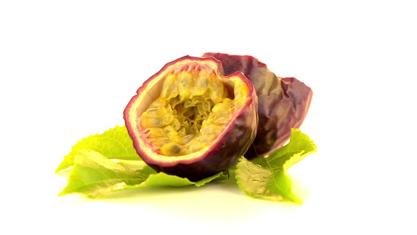

Known for its pungent smell and spiky exterior, it is very well known in South East Asia.
Known for its pungent smell and spiky exterior, it is very well known in South East Asia. Common tropical fruit with a unique flavour and fragrance. The exterior is hard, but soften over time.
Common tropical fruit with a unique flavour and fragrance. The exterior is hard, but soften over time. Oddly shaped, this fruit can grow really big in size and weight over a period of time. It’s yellow hue “meat” is fragrant and distinctable.
Oddly shaped, this fruit can grow really big in size and weight over a period of time. It’s yellow hue “meat” is fragrant and distinctable. Appearance can be deceiving, this ball-size fruit has a white and flesh-like interior and a hardened seed.
Appearance can be deceiving, this ball-size fruit has a white and flesh-like interior and a hardened seed.With a slightly harden shell, this fruit’s interior is sweetly scented and a large central stone.
 Originated from Southeast Asia, this exotic fruit have a hard exterior shell, yet fibrous-like flesh.
Originated from Southeast Asia, this exotic fruit have a hard exterior shell, yet fibrous-like flesh.Know for its citrus and tangy flavor and also its resemblance to a 5 pointed figure.
Several size and colors, this exotic fruit contains many chia-like seeds within its white and red interior.
 Tropical and small size shaped, this fruit grows together in pod like branches.
Tropical and small size shaped, this fruit grows together in pod like branches.Rich in Vitamin C, this citrus and seedy fruit is lightweight and popular in various drinks.